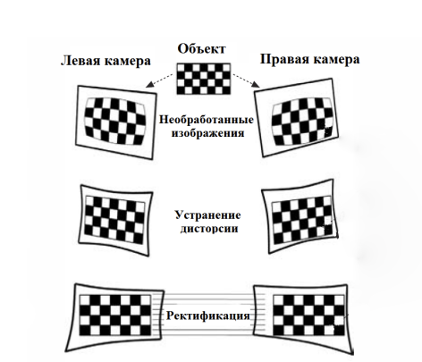

Калибровка
Калибровка - процесс получения внутрих и внешних параметров камер. Мы используем следующее...
Матрица внутренних параметров для каждой камеры
fx - фокусное расстояние по оси X (в пикселях)
fy - фокусное расстояние по оси Y (в пикселях)
cx - координата главной точки (оптического центра) по X
cy - координата главной точки по Y
Коэффициенты искажения объективов (distortion)
k1...k3 - радиальные искажения (рыбий глаз, "подушка")
p1, p2 - тангенциальные искажения (сдвиг изображения при наклоне линзы)
Матрица поворота
Описывает, как правая камера ориентирована относительно левой.
Вектор трансляции
Положение правой камеры относительно левой в 3D-пространстве
Ректификация
Из-за разницы в положении и ориентации левой и правой камеры, одна и та же точка в пространстве может иметь разные координаты по вертикали. Нам же нужно, чтобы пиксели на обоих кадрах находились на одной и той же горизонтальной линии, поэтому, засчет полученных параметров мы также расчитываем набор параметров для ректификации, чтобы в дальнейшем составить карты трансформации самого изображения

Получение параметров
Скрипт 3_calibrate_cameras.py предназначен для расчета выше описанных параметров.
После выполнения этого сценария в рабочей директории появится три файла:
calib.npz - файл калибровки
rectify.npz - файл ректификации
transformation_map.npz - карты трансформации
usage: 3_calibrate_cameras.py [-h] folder_path rows columns square_size
Этот скрипт предназначен для вычисления внешних и внутренних параметров камер На выходе в корневую директорию будет записано три
файла calib.npz - результат самой калибровки rectify.npz - результат стерео-ректификации, используются для построения карт
ремаппинга transformation_map.npz - карты трансформации (ремапинга)
positional arguments:
folder_path Путь к папке с изображениями
rows Количество внутренних углов в строках шахматной доски.
columns Количество внутренних углов в столбцах шахматной доски.
square_size Размер квадрата в см.
options:
-h, --help show this help message and exit